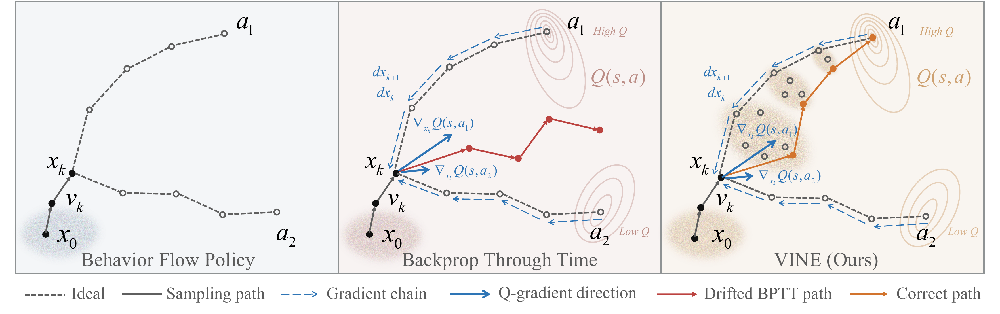

VINE: Taming Generative Control Policies for Reinforcement Learning
Enabling stable backpropagation-through-time fine-tuning of flow-matching policies
1 AgiBot 2 The Hong Kong University of Science and Technology 3 Peking University
Abstract
Flow-matching policies have emerged as an effective policy parameterization for robot learning. They iteratively generate actions from noise, enabling highly expressive modeling of complex and multimodal action distributions. However, prior works observed that scaling these policies with value-gradient reinforcement learning (RL) often leads to training instability. Existing methods attribute this instability to iterative generation and therefore avoid end-to-end value-gradient optimization by sacrificing iterative generation, high expressiveness, or value-gradient optimization. Contrary to prior belief, we show the instability does not stem from iterative generation itself, but from the vanilla sampling strategy originally designed for behavior cloning, which becomes brittle under value-gradient RL. Motivated by this insight, we propose VINE, an RL-oriented sampling method that enables stable end-to-end value-gradient optimization for flow-matching policies. Instead of following a single flow trajectory, VINE reconstructs a new interpolation state at every denoising step, creating a stable differentiable path for value-gradient propagation while remaining compatible with the original flow-matching denoising process. As a result, VINE preserves the expressiveness and iterative generation of flow-matching without sacrificing end-to-end value-gradient optimization. Despite performing end-to-end backpropagation through all ten denoising steps, VINE achieves stable policy improvement and consistently outperforms state-of-the-art RL methods on the OGBench offline RL benchmark and real-world robotic manipulation tasks.

VINE reconstructs a new interpolation state at each denoising step, enabling stable end-to-end value-gradient optimization while preserving iterative flow-matching generation.
Algorithm
- VINE replaces the Euler sampler with per-step re-anchored interpolation and fresh noise, creating a stable differentiable path for value-gradient propagation.
- The critic Qφ(s, a) is trained with the standard Bellman TD loss on actions produced by Generate(s).
- The velocity field vθ is updated via BPTT through the full K-step Generate chain, with an optional BC regularizer.
- VINE changes only the sampler and remains compatible with the original flow-matching denoising process and network architecture.
Click to see the full algorithm
Algorithm 1 VINE: Actor-Critic Training
- function Generate(s)
- a0 ∼ N(0, Id)
- for k = 0, …, K − 1 do▹ Iterative generation
- tk ← k/K
- xk ← xk + (1/K) vθ(xk, tk; s)▹ Replace Euler Method
- zk ∼ N(0, Id)
- xk ← tk ak + (1 − tk) zk
- ak+1 ← xk + (1 − tk) vθ(xk, tk; s)
- end for
- return aK
- end function
- while not converged do
- Collect transitions with Generate(s) and add to D▹ Optionally for online RL
- Sample batch {(s, a, r, s′)} ∼ D
- a′ ← Generate(s′)
- Update φ to minimize E[(Qφ(s, a) − r − γ Qφ̄(s′, a′))2]▹ Train critic Qφ
- aK ← Generate(s)
- Update θ to minimize −Qφ(s, aK) + α‖aK − a‖2▹ Train velocity vθ via BPTT
- end while
- return policy πθ(s) ≡ Generate(s)
Experiments
Offline RL on OGBench
We first test whether VINE can optimize expressive generative policies in offline RL. The benchmark covers 40 tasks from eight OGBench domains, including long-horizon navigation and sparse-reward manipulation. Each task is trained with 12 seeds and reported as mean performance with 95% confidence intervals.
Click to expand offline results across 8 domains (40 tasks)
Offline results, 8 domains. Per-task success rates with 95% bootstrap confidence intervals (12 seeds per task). Each domain reports five tasks plus a pooled aggregate.
Toy Simulation: BC vs. RL
On a 2D multimodal toy task, we compare behavior cloning (BC) with TD3+BC fine-tuning for diffusion (DDPM), flow matching with Euler sampling (FM), and VINE. Each animation shows sampled actions and critic values during inference.
DDPM
Flow Matching (Euler)
VINE
Online Real-World Socket Insertion
We further evaluate VINE on a real-world plug insertion task. Starting from scratch, the robot learns to pick up a plug and insert it into a fixed socket under tight contact tolerances. VINE reaches 20/20 success after 20 minutes of fine-tuning, with 19.2% human-intervention steps over the collected data.
Real-World Rollout Comparison
Scroll horizontally through each row to compare successful VINE rollouts with representative baseline failure cases on the socket insertion task.
VINE Success Cases
Scroll to view more success clips →
Baseline Failure Cases
Scroll to view more failure clips →
Learning Progression from Scratch
This 25-minute from-scratch run shows VINE learning socket insertion in real time. The policy starts from random motion, finds the socket within a few minutes, turns early one-off successes into short streaks, and reaches 20 consecutive successful insertions by 20 minutes.
| Time | Observed behavior |
|---|---|
| 0:00 | Random motion; no meaningful task progress yet. |
| 2:00 | The arm finds the socket region, but insertion remains 0/20. |
| 4:20 | First autonomous success, still fragile and hard to repeat. |
| 5:23 | Small corrections appear; short 3–4 success streaks emerge. |
| 8:00 | Human intervention drops to light corrections. |
| 13:00 | Faster, bolder motions briefly trade off precision. |
| 20:00 | Stable speed and accuracy; 20 consecutive successful insertions. |
| Plug Insertion Task | BC init. | DSRL | RLT | EXPO | SAC-Flow | Hil-SERL | VINE |
|---|---|---|---|---|---|---|---|
| Success rate (↑) Time (↓) |
10/20 -- |
17/20 50 min |
17/20 50 min |
19/20 40 min |
12/20 20 min |
16/20 20 min |
20/20 20 min |
| Human-intervention (↓) | -- | -- | 29.7% | 56.3% | 74.6% | 55.9% | 19.2% |
BC policy is trained from 15 human demonstrations. Human-intervention ratio is computed as intervention steps / total rollout steps.
More Real-World Experiments
Additional from-scratch real-world fine-tuning runs with VINE on contact-rich manipulation tasks.
Citation
@article{vine2026,
title = {VINE: Taming Generative Control Policies for Reinforcement Learning},
author = {Anonymous},
year = {2026},
note = {Under review}
}